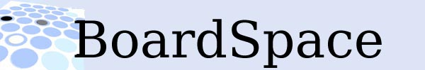
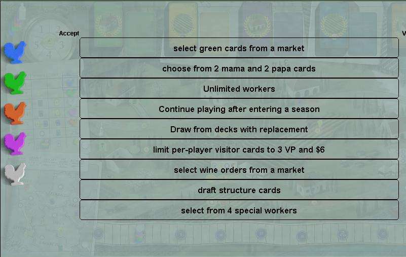
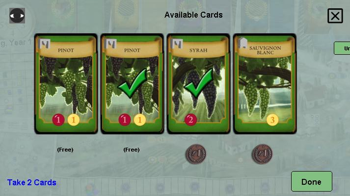
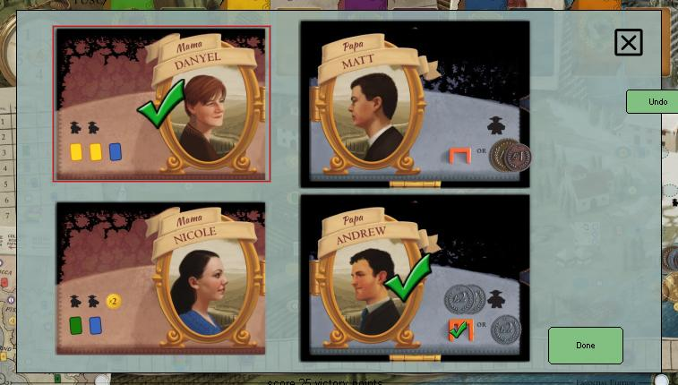
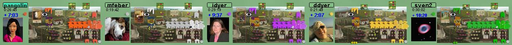
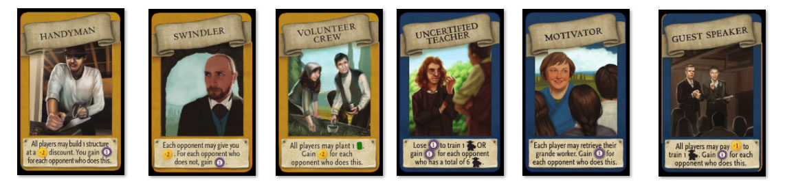
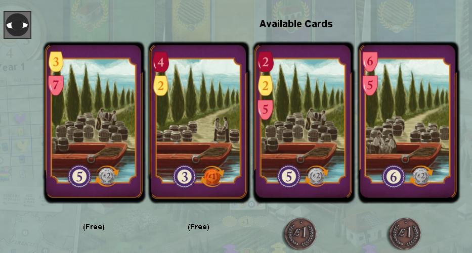
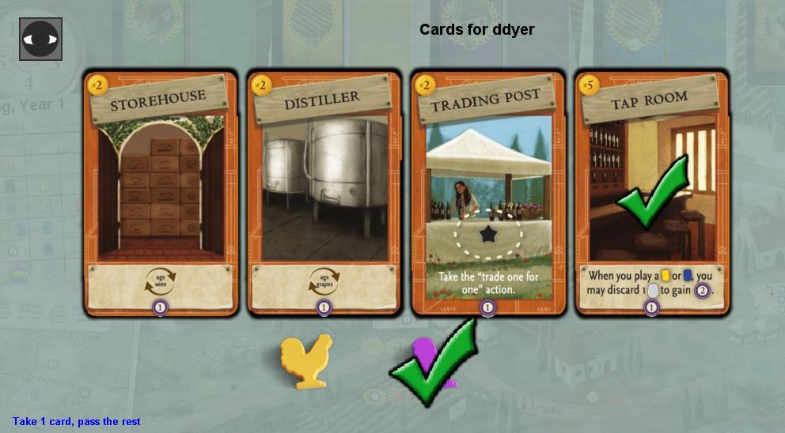
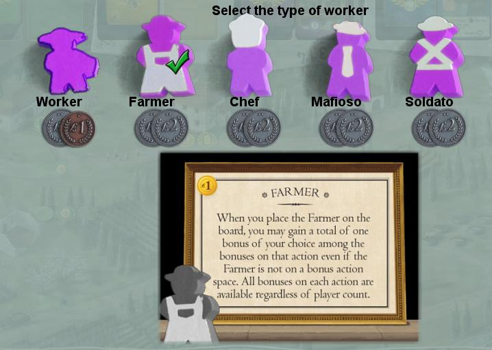

|
 |
|

When you draw green cards, from the draw green card actions, you also draw 2 extra cards which you can choose
instead,
and pay $1 for the benefit. If an oracle worker is in use, one
additional free choice will be available. Gaining
green cards from other sources (trace, stars, wakeup row, visitor cards) is unchanged.






